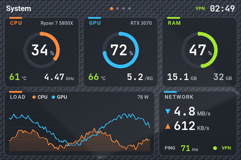
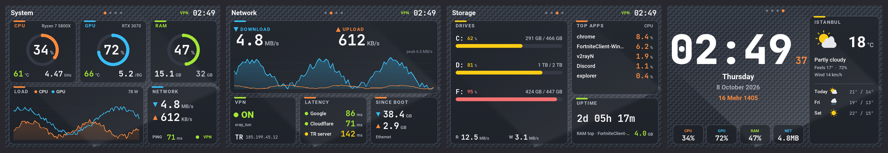
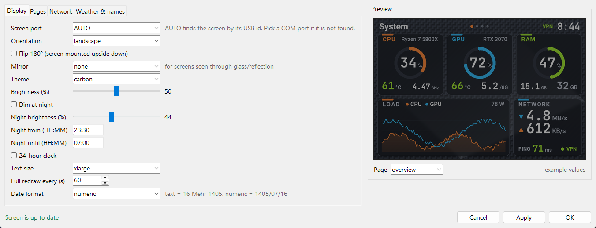

Your 3.5" USB screen, finally good-looking.
نمایشگر ۳٫۵ اینچی USB شما، بالاخره زیبا.
Smart-Screen replaces the vendor UsbMonitor app of 3.5" USB system-monitor screens (Turing Smart Screen rev A and its clones). CPU, GPU, RAM, temperatures, network, VPN, drives, clock with Jalali date and weather, in 6 themes, landscape or portrait.
Smart-Screen جایگزین برنامهٔ UsbMonitor سازندهٔ نمایشگرهای ۳٫۵ اینچی USB مانیتورینگ سیستم است (Turing Smart Screen نسخهٔ rev A و مشابهها). CPU، کارت گرافیک، رم، دما، شبکه، VPN، درایوها، ساعت با تاریخ شمسی و آبوهوا؛ در ۶ تم، افقی یا عمودی.

Which screens is it for?
مخصوص چه نمایشگرهایی است؟
Smart-Screen speaks the rev A serial protocol (USB CDC, 115200 baud). Screens with that protocol are found automatically by USB ID or serial number.
Smart-Screen با پروتکل سریال rev A (USB CDC، سرعت 115200) کار میکند. نمایشگرهایی که این پروتکل را دارند خودکار با شناسهٔ USB یا شمارهٔ سریال پیدا میشوند.
Turing Smart Screen 3.5" (rev A)
- The original 3.5" model, 320×480 IPS
- مدل اصلی ۳٫۵ اینچی، IPS با رزولوشن 320×480
- Device Manager:
VID_1A86&PID_5722 - در Device Manager:
VID_1A86&PID_5722
3.5" "UsbMonitor" / "UsbPCMonitor" IPS screens
نمایشگرهای ۳٫۵ اینچی «UsbMonitor» / «UsbPCMonitor»
- AliExpress / Amazon clones sold as "3.5 inch IPS USB-C computer monitor / AIDA64 sub-screen"
- مدلهای علیاکسپرس و آمازون با نام «3.5 inch IPS USB-C computer monitor / AIDA64 sub-screen»
- Came with the UsbMonitor.exe app; USB serial
USB35INCHIPSV2 - همراهش برنامهٔ UsbMonitor.exe آمده؛ سریال USB:
USB35INCHIPSV2
Other protocols
پروتکلهای دیگر
- Turing 2.1" / 5" / 8.8" (rev C)
- Turing مدلهای ۲٫۱، ۵ و ۸٫۸ اینچ (rev C)
- XuanFang 3.5" (rev B), Kipye / WeAct (rev D)
- XuanFang سهونیم اینچ (rev B)، Kipye و WeAct (rev D)
- Use turing-smart-screen-python for these
- برای اینها از turing-smart-screen-python استفاده کنید
Features
امکانات
Everything you can see on the screen, and everything you can change from the tray icon.
هر چیزی که روی نمایشگر میبینید و هر چیزی که از آیکون کنار ساعت ویندوز قابل تغییر است.
System page
صفحهٔ System
CPU, GPU and RAM gauges, temperatures, clocks, power draw, load graph, network speed and ping.
گیج CPU، کارت گرافیک و رم، دما، فرکانس، توان مصرفی، نمودار بار، سرعت شبکه و پینگ.
Network page
صفحهٔ Network
Download / upload graph, VPN on/off, public IP and country, HTTP latency to several targets or your own server, traffic since boot.
نمودار دانلود و آپلود، روشن/خاموش بودن VPN، IP عمومی و کشور، تأخیر HTTP به چند مقصد یا سرور خودتان، ترافیک از زمان روشن شدن.
Storage page
صفحهٔ Storage
Every drive with a fill bar, disk read / write speed, top apps by CPU and uptime.
همهٔ درایوها با نوار پرشدگی، سرعت خواندن و نوشتن دیسک، پرمصرفترین برنامهها و مدت روشن بودن.
Clock page
صفحهٔ Clock
Big clock, Gregorian and Jalali (Persian) date as text or numbers, weather with a 3-day forecast (Open-Meteo, no API key).
ساعت بزرگ، تاریخ میلادی و شمسی بهصورت متن یا عدد، آبوهوا با پیشبینی ۳ روزه (Open-Meteo، بدون کلید API).
6 themes
۶ تم
Midnight, Neon (glow), Ember, Frost (light), plus Aurora and Carbon with textured backgrounds that hide LCD ghosting.
Midnight، Neon (درخشان)، Ember، Frost (روشن)، و Aurora و Carbon با پسزمینهٔ بافتدار که سایهٔ تصویر ماندگار LCD را میپوشانند.
Rotate, flip, mirror
چرخش، وارونه، آینه
Landscape or portrait, Flip 180° for screens mounted upside down, horizontal / vertical mirror for screens seen through glass.
افقی یا عمودی، چرخش ۱۸۰ درجه برای نمایشگر وارونه، آینهٔ افقی / عمودی برای نمایشگری که از پشت شیشه دیده میشود.
Text size
اندازهٔ متن
Normal, large or extra large. Values shrink to fit their card instead of overflowing.
معمولی، بزرگ یا خیلی بزرگ. عددها بهجای بیرون زدن از کارت، کوچک میشوند تا جا شوند.
Brightness & night mode
روشنایی و حالت شب
Set brightness, dim automatically between two times, or turn the screen off from the tray.
تنظیم روشنایی، کمنور شدن خودکار بین دو ساعت، یا خاموش کردن نمایشگر از منوی آیکون.
Fast partial updates
بهروزرسانی سریع و جزئی
One frame per second, only the changed parts are sent over USB, plus a periodic full redraw to keep it clean.
هر ثانیه یک فریم؛ فقط بخشهای تغییرکرده از USB فرستاده میشوند، با بازکشی کامل دورهای برای تمیز ماندن تصویر.
Real temperatures
دمای واقعی
LibreHardwareMonitor for CPU and GPU (Intel and AMD), with nvidia-smi as a fallback for NVIDIA cards.
LibreHardwareMonitor برای CPU و کارت گرافیک (اینتل و AMD) و nvidia-smi بهعنوان پشتیبان برای کارتهای NVIDIA.
VPN-aware ping
پینگ درست با VPN
Latency is an HTTP round trip on an open connection, so TUN-mode VPNs (v2rayN, sing-box, Clash…) can't fake a 1 ms ping.
تأخیر بهصورت رفتوبرگشت HTTP روی اتصال باز اندازه گرفته میشود تا VPNهای حالت TUN (v2rayN، sing-box، Clash و…) پینگ ۱ میلیثانیهای الکی نشان ندهند.
Tray icon + Settings
آیکون و پنجرهٔ تنظیمات
Quick switches in the tray menu; a Settings window with live preview that sends nothing to the screen until you press Apply. Starts with Windows.
تغییرات سریع از منوی آیکون؛ پنجرهٔ تنظیمات با پیشنمایش زنده که تا Apply نزنید چیزی به نمایشگر نمیفرستد. همراه ویندوز اجرا میشود.
Screenshots
تصاویر
All four pages, rendered by the app itself with sample data. Pick a theme and orientation.
هر چهار صفحه که خود برنامه با دادههای نمونه کشیده است. تم و جهت را انتخاب کنید.

Install
نصب
About two minutes. The installer can be run again at any time to update.
حدود دو دقیقه. نصبکننده را هر وقت خواستید برای بهروزرسانی دوباره اجرا کنید.
Download
دانلود
Download the ZIP and extract it to a permanent folder, e.g. Documents\Smart-Screen.
فایل ZIP را دانلود و در یک پوشهٔ دائمی باز کنید، مثلاً Documents\Smart-Screen.
Close the old app
بستن برنامهٔ قبلی
Plug in the screen and close UsbMonitor.exe. The installer also offers to turn off its autostart.
نمایشگر را وصل کنید و UsbMonitor.exe را ببندید. نصبکننده هم پیشنهاد میدهد اجرای خودکارش خاموش شود.
Run install.bat
اجرای install.bat
Accept the admin prompt. It sets up Python + packages, the PawnIO temperature driver and a "Smart-Screen" autostart task.
اجازهٔ ادمین بدهید. پایتون و پکیجها، درایور دمای PawnIO و تسک اجرای خودکار «Smart-Screen» را آماده میکند.
Customise
شخصیسازی
Right-click the tray icon → Settings… for theme, orientation, pages, weather city and your own latency server.
روی آیکون کنار ساعت ویندوز راستکلیک ← Settings… برای تم، جهت، صفحهها، شهر آبوهوا و سرور پینگ خودتان.

| File | فایل | What it does | کارش |
|---|---|---|---|
install.bat | Install or update (safe to run again)نصب یا بهروزرسانی (اجرای دوباره مشکلی ندارد) | ||
start.bat / stop.bat | Start / stop the background appاجرا / توقف برنامه در پسزمینه | ||
run-console.bat | Run in a console to see errorsاجرا در کنسول برای دیدن خطاها | ||
uninstall.bat | Remove the autostart task (files stay)حذف تسک اجرای خودکار (فایلها میمانند) | ||
config.yaml | All settings; reloads by itself when changedهمهٔ تنظیمات؛ با تغییر خودکار دوباره خوانده میشود |
Troubleshooting
رفع مشکل
| "Screen not found"«Screen not found» | Close UsbMonitor.exe, replug the cable, or pick the COM port in Settings.UsbMonitor.exe را ببندید، کابل را جدا و وصل کنید، یا پورت COM را در تنظیمات انتخاب کنید. |
| No CPU temperatureدمای CPU خالی است | Start with start.bat (admin task) and run install.bat again for PawnIO.با start.bat اجرا کنید (تسک ادمین) و برای PawnIO دوباره install.bat را اجرا کنید. |
| Upside downتصویر وارونه است | Tray → Rotate / Flip → Flip 180°.منوی آیکون ← Rotate / Flip ← Flip 180°. |
| Old image shows throughتصویر قبلی کمرنگ دیده میشود | LCD retention: tray → Clear ghost image, or use Aurora / Carbon.تصویر ماندگار LCD: منوی آیکون ← Clear ghost image، یا تم Aurora / Carbon. |